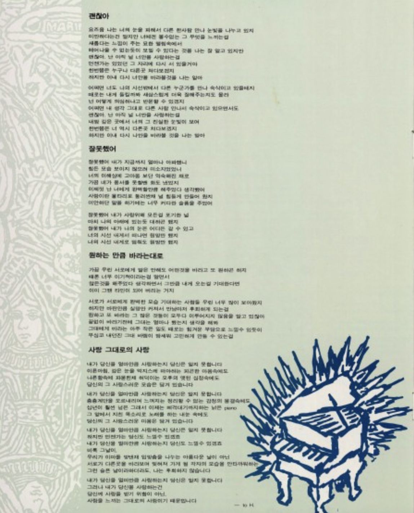
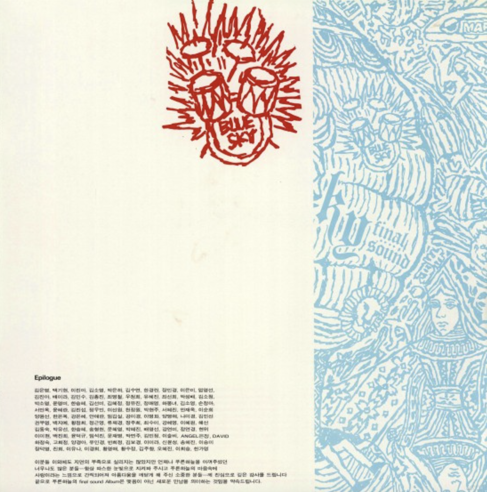
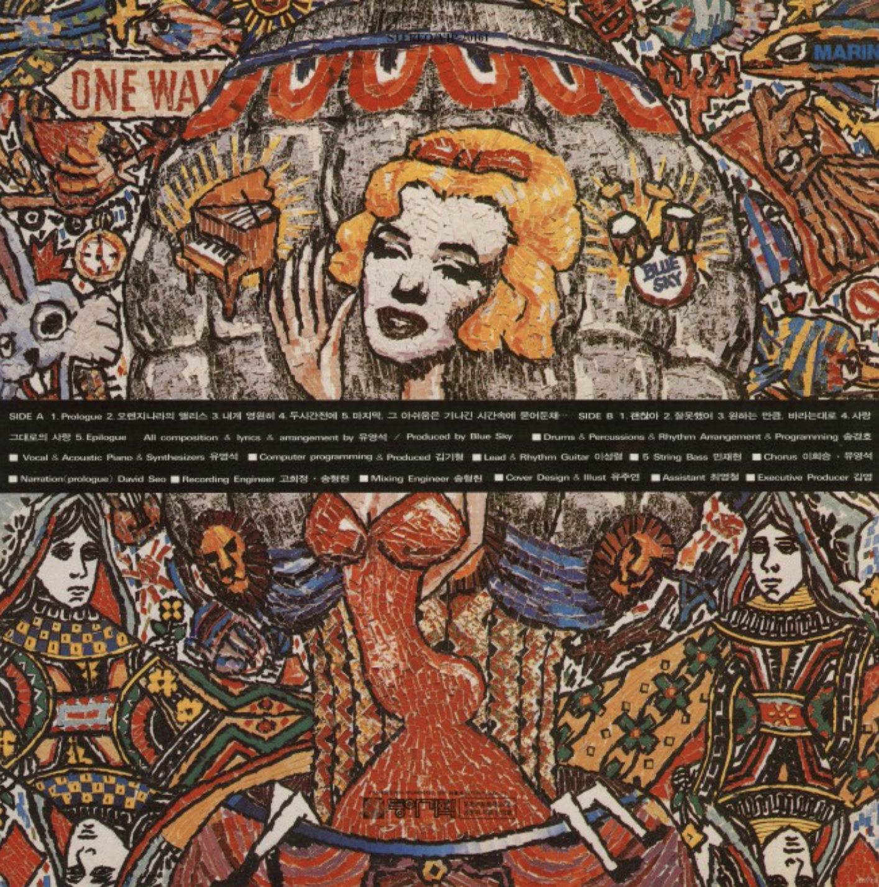

오렌지 나라의 앨리스
<1993>
가수 소개
푸른하늘은 1988년부터 활동한 동아기획 소속의 팝 밴드로, 유영석을 중심으로 한 감성적인 음악으로 사랑받았다. ‘겨울바다’, ‘눈물나는 날에는’, ‘우리 모두 여기에’ 등의 히트곡을 남겼으며, 대중적인 멜로디와 서정적인 분위기가 특징이다. 대부분의 작사·작곡·보컬을 유영석이 맡아 사실상 원맨 밴드에 가까운 형태로 활동했다.
🎵


